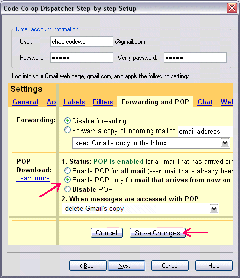

Setting up Gmail
Setting up Code Co-op to work with Gmail is quick and easy.
First you have to obtain a free Gmail account and configure it to accept POP connections.
- From your browser, login to your Gmail Account.
- Select Settings in the upper right corner of your Gmail homepage and make the adjustments as shown in the screenshot.
- Select Forwarding and POP from the settings menu.
- Click the radio button "Enable POP only for mail that arrives from now on".

< Back Next: Email Diagnostics >